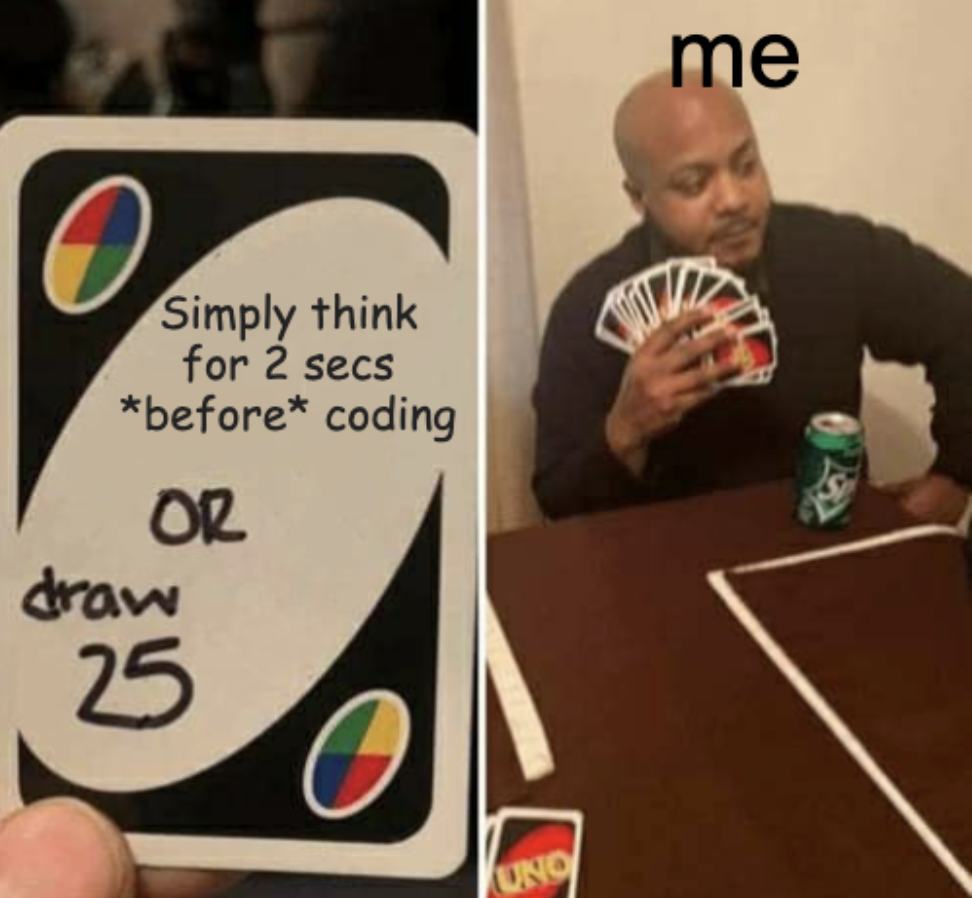

.check_revealjs <- function() {
# Fetch lines from the source
active_doc <- rstudioapi::getActiveDocumentContext()
contents <- active_doc[["contents"]]
# Identify the lines that compose the YAML header
yaml_end_index <- which(contents == "---")[2]
yaml_only <- contents[seq(yaml_end_index)]
# Parse the YAML header, detect 'format' key
yaml_parsed <- yaml::yaml.load(yaml_only)
has_format <- "format" %in% names(yaml_parsed)
# Detect if the format is revealjs
is_revealjs <- FALSE # default
if (has_format) {
formats <- yaml_parsed[["format"]]
# Format structure could differ, depends on YAML nesting
formats_is_vec <- inherits(formats, "character")
formats_is_list <- inherits(formats, "list")
if (formats_is_vec) {
is_revealjs <- "revealjs" %in% formats
}
if (formats_is_list) {
is_revealjs <- "revealjs" %in% names(formats)
}
}
return(is_revealjs)
}
tl;dr
I wrote a cunning solution to fix an issue in the {quartostamp} R package. Spoiler: it was completely unnecessary. A lesson!
Put it on my tab
{quartostamp} is an R package that contains an RStudio Addin to help insert and modify code in Quarto documents. I originally made it to help me write Quarto presentations: I kept forgetting the correct syntax for things like inserting speaker notes and column layouts.1
Zoë made a great, subtle point in a GitHub issue: the ‘Insert Tabset’ option uses level-3 Markdown headers (###) for its tab titles, but shouldn’t they be level 2 (##)?
To illustrate, here’s what {quartostamp} was inserting for a tabset:
::: {.panel-tabset}
### Tab A
Content for Tab A
### Tab B
Content for Tab B
:::Which would render like this:
Content for Tab A
Content for Tab B
So ### Tab A in the YAML should be ## Tab A, for example.
I think I’d used level 3 headers because second-level headers demarcate new slides in a Quarto presentation and the specific guidance for presentations appears to suggest ###.
So, obviously, an instance of ## in a tabset header could break someone’s slides and I should come up with some convoluted solution, right? What could go wrong? (This is a literary technique called ‘foreshadowing’, dear reader.)
A stab at the tabs
So, what to do? It seemed as though there were three options:
- Have two versions of the tabset function that insert
##or###. - Switch to
##only . - Retain only
###.
Each is a relatively easy change. But number 1 is a non-starter because it’s confusing from a user’s perspective. Number 2 would disrupt people making presentations; they’d have to manually add the extra # each time. Number 3 is probably the least worst, but might be surprising for general Quarto users.
So, a bonus idea:
- Adapt the heading level automatically, based on the document format.
That sounds complicated. Is it?
A dash to hash
Quarto docs start with a text-based ‘YAML header’. This contains a bunch of key-value metadata like the document title, author, etc, between ‘fences’ given by triple hyphens (---). At simplest:
---
format: revealjs
---Or more likely, something nested like this:
---
title: Chocolate Hobnobs
subtitle: The best biscuits
author: Matt Dray
format:
revealjs:
theme: [default, biscuits.scss]
menu: false
title-slide-attributes:
data-background-image: hobnob.png
---So we have to somehow read the YAML header of the Quarto file we’re working on and then extract the format information to see if it’s a presentation or not.
So I ended up doing this:
- Detect information about the active Quarto document in the RStudio script pane with
rstudioapi::getActiveDocumentContext(). - Isolate the text content.
- Detect the lower limit of the document’s YAML header (i.e. the second, closing instance of the
---YAML fence). - Use
yaml::yaml.load()to parse the YAML header. - Detect if a
formatkey-value pair is present - Detect if at least one listed format is
revealjs(the Javascript library Quarto uses to make presentations). - If yes, construct a level 3 header (
###), otherwise level 2 (##). - Insert the tabset code into the Quarto file.
Hash in the trash
Except guess what? The presence of ## inside tabset code actually doesn’t create a new slide. I should’ve tested this before I started writing a solution. I think Quarto checks context: if Markdown is provided within ::: fences then it’s evaluated in that context. That makes sense!
Click for a Quarto reprex
Pop this in a qmd file and hit ‘render’.
---
title: "Testing tabset titles"
format: revealjs
---
## Using level 3
::: {.panel-tabset}
### Tab A
Content for Tab A
### Tab B
Content for Tab B
:::
## Using level 2
::: {.panel-tabset}
## Tab A
Content for Tab A
## Tab B
Content for Tab B
:::
On the plus side, I had fun solving the ‘problem’ and thinking creatively to extract and parse the YAML and write logic to handle each case. I don’t claim it’s optimised, but I’ve added it below for posterity.
First, a function that uses {rstudioapi} to read the active Quarto doc in the RStudio source pane and outputs TRUE if it’s a revealjs presentation.
The output from .check_revealjs() could then be used in a modified stamp_tabset() (the function that powers the ‘Insert Tabset’ option from the Addins menu) where TRUE inserts a level 3 header, otherwise a level 2 header.
stamp_tabset <- function() {
is_revealjs <- .check_revealjs()
# Set headers to level 2 by default
heading_level <- 2
# Set as level 3 if the active doc is a revealjs presentation
if (is_revealjs) {
heading_level <- 3
}
# Generate tabset header Markdown depending on doc format
tabset_heading_md <- paste(rep("#", heading_level), collapse = "")
# Insert tabset code with appropriate heading level
.replace_text(
pre = paste0(
"::: {.panel-tabset}\n",
"\n",
paste(tabset_heading_md, "Tab A\n"),
"\n"
),
body = "Content for Tab A\n",
post = paste0(
"\n",
paste(tabset_heading_md, "Tab B\n"),
"\n",
"Content for Tab B\n",
"\n",
":::\n"
)
)
}You can see the actual current state of the code in the matt-dray/quartostamp GitHub repo, which also has the source for the .replace_text() function show in the code block above.
Hash and burn
Which leads us to a bonus bonus idea:
- Merge Zoë’s pull request that simply changes
###to##.
And so {quartostamp} version 0.1.1 is now available!
I look forward to further developments. But less so for ‘antidevelopments’ like these, lol.
Environment
Session info
Last rendered: 2023-09-04 12:03:31 BSTR version 4.3.1 (2023-06-16)
Platform: aarch64-apple-darwin20 (64-bit)
Running under: macOS Ventura 13.2.1
Matrix products: default
BLAS: /Library/Frameworks/R.framework/Versions/4.3-arm64/Resources/lib/libRblas.0.dylib
LAPACK: /Library/Frameworks/R.framework/Versions/4.3-arm64/Resources/lib/libRlapack.dylib; LAPACK version 3.11.0
locale:
[1] en_US.UTF-8/en_US.UTF-8/en_US.UTF-8/C/en_US.UTF-8/en_US.UTF-8
time zone: Europe/London
tzcode source: internal
attached base packages:
[1] stats graphics grDevices utils datasets methods base
loaded via a namespace (and not attached):
[1] htmlwidgets_1.6.2 compiler_4.3.1 fastmap_1.1.1 cli_3.6.1
[5] tools_4.3.1 htmltools_0.5.5 rstudioapi_0.15.0 yaml_2.3.7
[9] rmarkdown_2.23 knitr_1.43.1 jsonlite_1.8.7 xfun_0.39
[13] digest_0.6.33 rlang_1.1.1 evaluate_0.21 Footnotes
The package got some great feature requests: Indrajeet asked for callout boxes and Zoë suggested that the package could modify existing text as well as insert skeleton code.↩︎
Reuse
CC BY-NC-SA 4.0